Model Repository
Examples
A two-gene network with mutual inhibitions and self-loops.
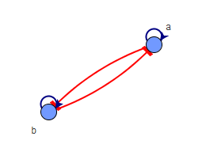
Probabilistic landscape
Probabilistic landscape visualized by mapping to two marker genes (the result is saved in "saved results/2genePro")
Parameters: Boundary=3, number of simulations=100, time=128
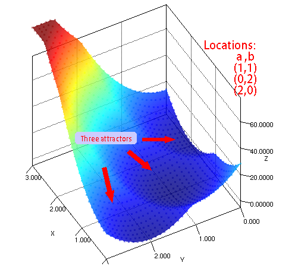
Probabilistic landscape visualized using GPDM (the result is saved in "saved results/2geneGPDM")
Parameters: Boundary=3, number of simulations=100, time=128, GPDM its=50
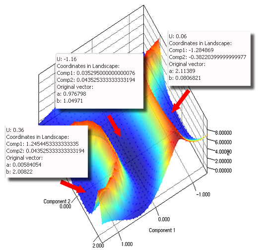
To study the stem cell reprogramming process, a computational model, 'seesaw model' with 4 genes (figure below) was constructed in (Shu et al, 2013). NetLand was applied to simulate and analyze the model.
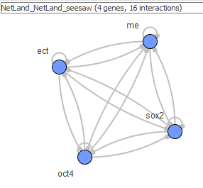
Probabilistic landscape
Probabilistic landscape visualized by mapping to two marker genes (the result is saved in "saved results/seesawPro")
Parameters: Boundary=3, number of simulations=200, time=128
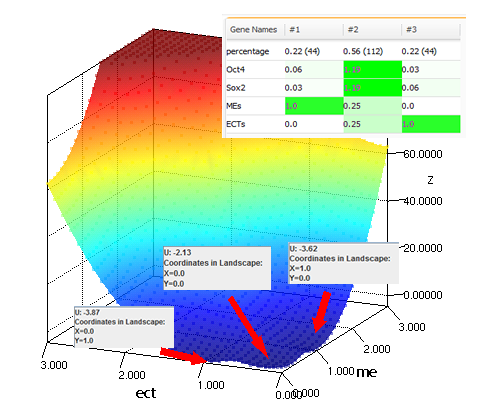
Probabilistic landscape visualized using GPDM (the result is saved in "saved results/seesawGPDM")
Parameters: Boundary=3, number of simulations=100, time=128, GPDM its=50
Sensitivity analysis
Parameter KM=0
When the value of Klf4 and MYC is set to be 0, the cells cannot maintain their pluripotency to start differentiation. There will be two attractors left in the landscape representing ME and ECT states.

Landscape with two attractors when KM=0.
Parameter KM=0.4
Besides two attractors, there will be an additional state representing stem cell state.

Landscape with three attractors when KM=0.4.
Reprogramming experiment with different cocktails
3.1 +Sox2
With the replenishment of Sox2, the ME lineage will all change into the ECT lineage. There are two attractors left, i.e. stem cell state and ECT state.
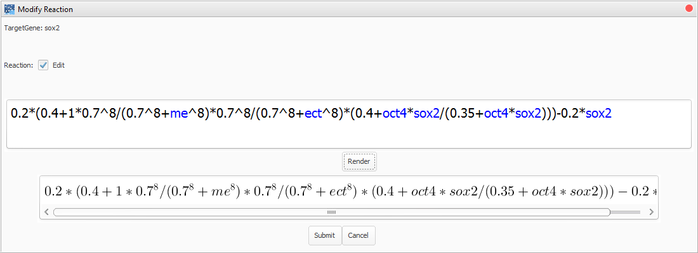

Landscape with two attractors when Sox2 is overexpressed.
To check whether all ME cells goes into ECT lineage, we set the initial state as ME state and made use of the analyze function in trajectories simulation. It shows all ME cells turned into ECT state (figure below).

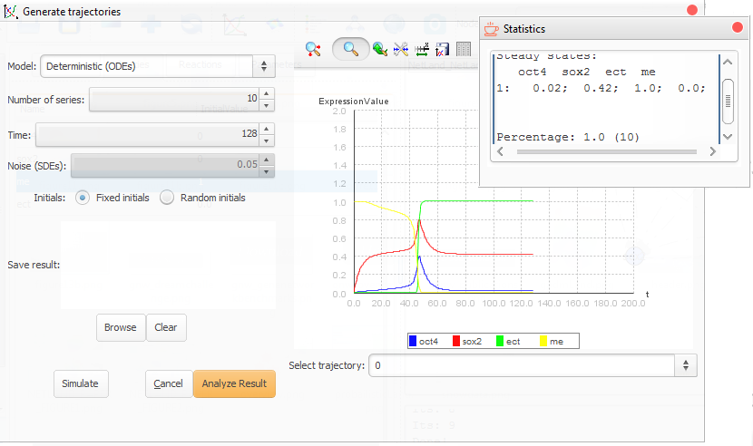
3.2 +Yamanaka's factors (+Sox2+Oct4)
In this experiment, the somatic cells will be reprogrammed into iPSCs (similar to stem cells).
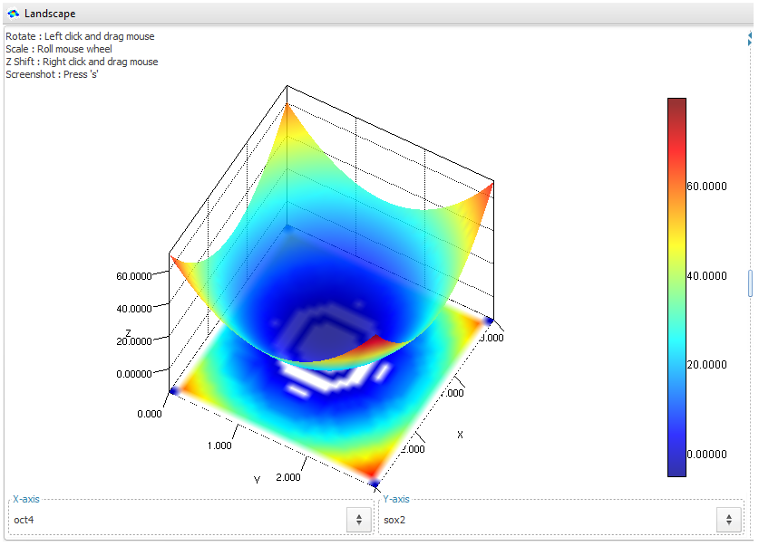
3.3 +Lineage specifiers (+ME+ECT)
In this experiment, ME and ECT work as the substitution of Oct4 and Sox2. The somatic cells will be reprogrammed into iPSCs (similar to stem cells).

A dynamical model of lineage determination based upon a minimal circuit which contains the Oct4/Sox2/Nanog core as well its interaction with a few other key genes is discussed. (BIOMD0000000209.xml from BioModels)
Probabilistic landscape
Probabilistic landscape visualized by mapping to two marker genes (the result is saved in "saved results/209Pro")
Parameters: Boundary=8, number of simulations=100, time=400
Note: a threshold is set to only show the quasi-potential value U in the landscape below 100. For those expression states with U larger than 100, the probalilities are quite small (~10^-100).
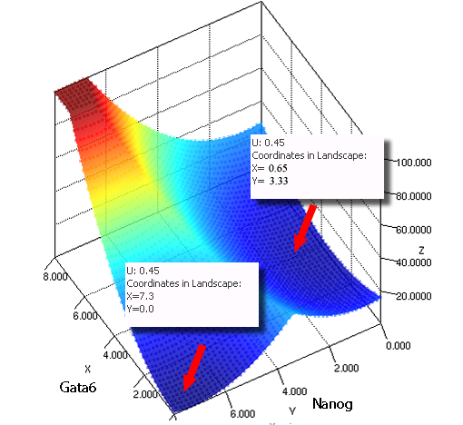
Probabilistic landscape visualized using GPDM (the result is saved in "saved results/209GPDM")
Parameters: Boundary=8, number of simulations=100, time=400, GPDM its=50
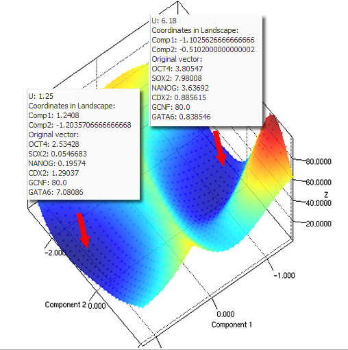
A stem cell developmental network with 52 gene network to study cell Fate Decisions

Probabilistic landscape
Probabilistic landscape visualized by mapping to two marker genes (the result is saved in "saved results/52genePro")
Parameters: Boundary=3, number of simulations=5000, time=128
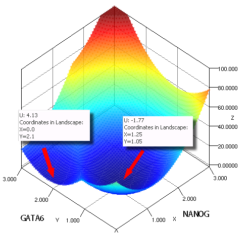
Probabilistic landscape visualized using GPDM (the result is saved in "saved results/52geneGPDM")
Parameters: Boundary=3, number of simulations=5000, time=128, GPDM its=50
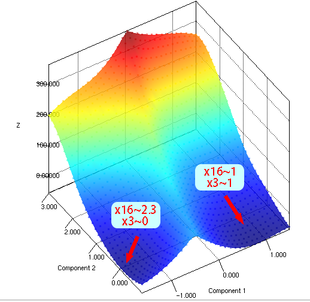
|